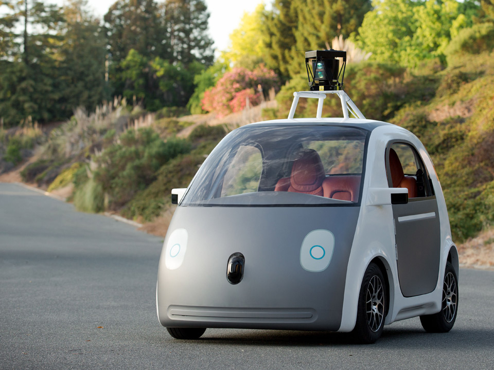

Robotics and Automation By Matthew
Humans have always wanted to find the most efficient and effective ways of doing things, from the basic use of tools to the mass automation that started during the industrial revolution.
Computers have greatly improved our ability to automate tasks as well allowing us to no longer do dangerous, boring, and monotomous jobs.
Boston Dynamics
Boston dynamics is an American company that was founded in 1992 which develops highly mobile robots.
One of their most well known products is a four legged canine called 'Spot' which can be seen below which was released in 2019 however they have been prototyping four legged robots since 2005!

With them now working on more advanced robots that are able to completely navigate the environment and use the resources that are available to do what they need to do. Below is a video of 'Atlas' where you can see him demonstrating his capabilities.
Self Driving Cars
Self driving cars are cars that are able to fully operate without the need for any human input. They use numereous sensors to gather infomation about the surroundings in order to make judgements and dicisions. These in conjuction with map data allow for the vehicle to navigate the roads.
Currently these are still relatively early in development and there are still many concerns with putting self driving cars on the road. With there being lots of ethical considerations to consider, for example the age old trolley problem, should a self driving car decide who gets to live and who gets to die? Who then should be held accountable?
Why is this all useful?
A lot of automation is not only done for convinience, but also for safety. For example with self driving cars, automation has the ability to help avoid human error which is the biggest cause for car accidents, whether that's because someone was distracted while on their phone or under the influence autonomy would eliminate this factor making driving a lot safer of a travelling experience. On the contrary, it is possible there are bugs and errors and in it's current state it would need more development to be widely accepted.
With the machines that boston dynamics are developing, they aim to be used in industries where it is largely unsafe for humans to be, whether that be in large factories that work with toxic chemicals or mines that are unsafe for humans to traverse, we can instead send a robot to do surveying and act on our behalf instead. This allows things to be done without having to risk human lives.
Matthew Wells
Matthew is originally from the south of England and is now
studying Computer Science at Durham university. It is his
passion to program and he loves solving problems.
He enjoys playing games as well as modding games and
reading through how games are developed and made.